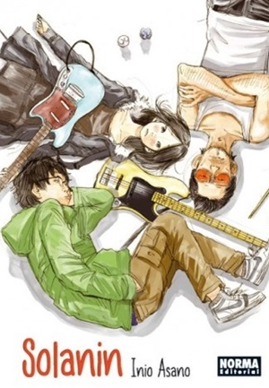

OBRAS
NIJIGAHARA HOLOGRAPH

En una de sus primeras obras de éxito, Inio Asano nos cuenta la historia de Amahiko Suzuki, protagonista de un oscuro rompecabezas de inquietante fantasía apocalíptica. Es una telaraña de asesinatos, suicidios, violaciones, acosos y fantasías de monstruos, sobre un fondo de densa violencia emocional que lo impregna todo.
SOLANIN
Es una obra que pone de manifiesto los miedos e incertidumbres que sienten todos aquellos que pasan de seguir un camino marcado por los estudios a estar en un lugar incierto en el que cada paso que se da puede marcar el futuro de dicha persona.
OYASUMI PUNPUN

Una historia atípica que sigue la vida y las experiencias del joven Onodera Punpun, desde la escuela primaria hasta que cumple los 20 años. La nota curiosa es que el protagonista se visualiza a sí mismo como a un adorable pollito.
LA CHICA A LA ORILLA DEL MAR

Cuenta la historia de Sato e Isobe, dos estudiantes que viven en un pequeño pueblo de la costa. Debido a diversas circunstancias, ambos toman la decisión de comenzar una relación estrictamente física, aunque con el paso del tiempo los sentimientos comienzan a hacer acto de presencia, algo que amenaza con dinamitar su pacto.